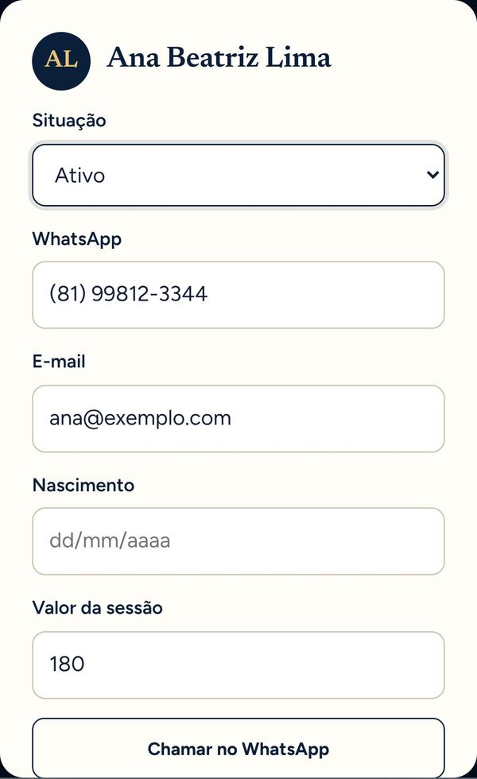
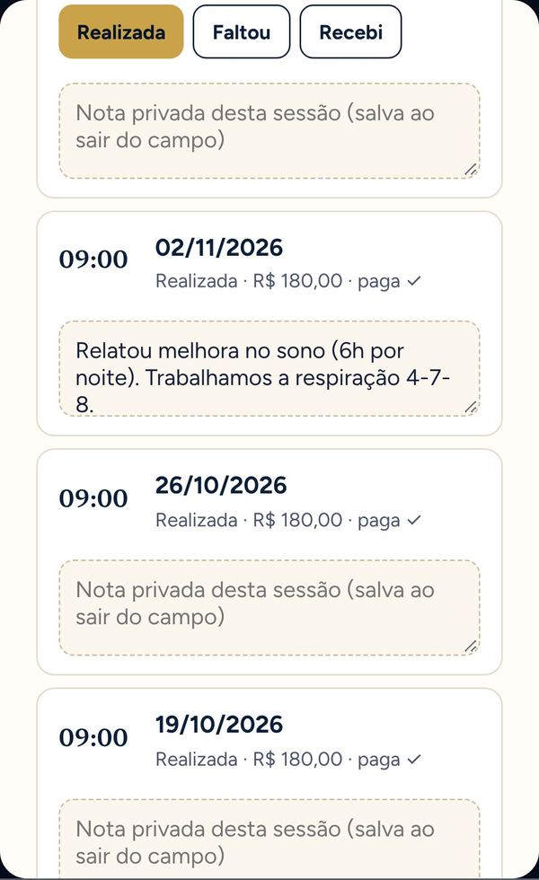
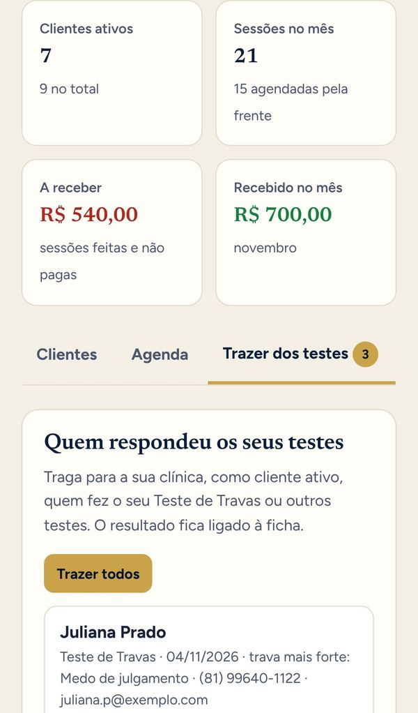

Quantas sessões você atendeu e esqueceu de cobrar este mês?
Clientes, agenda, pagamentos e anotações do seu consultório em um só lugar, no celular. E quem respondeu o seu Teste de Travas vira cliente com um toque.
O seu consultório ainda vive no caderninho?
- Anotações de sessão espalhadas entre caderno, celular e memória.
- Você não sabe na ponta do lápis quem está devendo sessão.
- Precisa abrir a conversa do WhatsApp para lembrar o horário de alguém.
- Quem fez o seu teste ficou esquecido e nunca virou cliente.
- No fim do mês, não sabe quanto realmente recebeu.
- Tem medo de perder informações sigilosas dos seus clientes.
Você cuida tão bem dos seus clientes. Está na hora de algo cuidar do seu consultório.
Tudo do seu consultório, em 4 telas
Estas são as telas reais da Clínica Otimizada, com clientes fictícios.
Todos os seus clientes, num relance
Quem está ativo, quem pausou, quantas sessões cada um já fez, a próxima data marcada e quem está devendo. Os números do mês aparecem no topo.
Você abre e sabe na hora: quantos clientes, quanto recebeu e quanto falta receber.
A ficha de cada cliente, sem papel
Contato, valor da sessão, queixa principal e as suas anotações privadas. Um toque em "Chamar no WhatsApp" e a conversa abre.
Só você vê. Nem a equipe Ressignificar tem acesso aos seus clientes.

Sessões, notas e pagamentos no mesmo lugar
Marque a sessão, depois toque em "Realizada", "Faltou" ou "Recebi". Escreva a nota da sessão ali mesmo. O "a receber" se atualiza sozinho.
Nenhuma sessão atendida fica sem cobrar.

Quem fez o seu teste vira cliente com um toque
Todo mundo que respondeu o seu Teste de Travas (ou outro teste seu) aparece aqui, com a trava mais forte e o contato. Um toque e a pessoa entra como cliente ativo, com o resultado ligado à ficha.
O teste atrai, a Clínica organiza e você converte.

Feito para a rotina de quem atende
- Agenda da semanaAs próximas sessões por dia, com hora e valor.
- Lembrete do que ficou para trásSessões que já passaram e você ainda não marcou como realizada ou falta.
- Situação de cada clienteAtivo, pausado ou encerrado, com busca pelo nome.
- Recebido e a receber do mêsSem planilha e sem fazer conta.
- Sigilo de verdadeOs registros são só seus, protegidos na sua conta.
- Celular e computadorO mesmo acesso nos dois, sempre atualizado.
Sem a Clínica Otimizada
- Anotações espalhadas e difíceis de achar
- Sessões atendidas que ninguém cobrou
- Quem fez o teste esfria e some
- Fim de mês sem saber quanto entrou
Com a Clínica Otimizada
- Ficha e notas de cada cliente num toque
- "A receber" sempre certo
- Teste vira cliente ativo na hora
- Recebido do mês na tela inicial
Basta recuperar uma sessão esquecida para ela se pagar
R$ 97 /mês
Cerca de R$ 3,20 por dia · sem fidelidade
Você já tem a Clínica Otimizada
Ela já está liberada na sua Área de Membros.
Abrir a minha clínicaPerguntas frequentes
Alguém além de mim vê os meus clientes?
Não. Os seus clientes, sessões e anotações ficam presos à sua conta. Nenhum outro profissional, nem a equipe Ressignificar, tem acesso.
Meus clientes precisam criar conta?
Não. Você cadastra o cliente só com nome e contato. Ele não precisa baixar nada nem criar senha.
Como trago quem fez o meu Teste de Travas?
Na aba "Trazer dos testes" aparecem todas as pessoas que responderam os seus testes. Um toque e a pessoa vira cliente ativo, com o resultado ligado à ficha.
Já sou cliente da Ressignificar. Preciso criar outra conta?
Não. Toque em "Já sou cliente", entre com o seu e-mail e a sua senha, e a Clínica é adicionada na conta que você já tem.
Como pago as próximas mensalidades?
A primeira é paga agora, pelo Pix ou cartão. As próximas vencem no mesmo dia do mês e você recebe um e-mail antes, com o link para pagar.
Posso cancelar?
Pode, quando quiser, sem multa. É só falar com o Mauricio pelo WhatsApp.